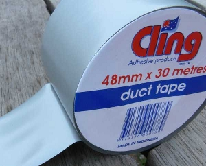

New SPL Features in PHP 5.3
Matthew Turland
Senior Engineer - Synacor, Inc.
My Name Is...
- Senior Engineer at Synacor, Inc.
- Past author and technical editor for php|architect
- Author of Web Scraping with PHP
- Past contributor to Zend Framework
- Lead developer of Phergie
- ULL alumni with a BS in computer science
And I Work For...
- Provides internet solutions to ISPs, media companies, and advertisers
- International company with offices in Buffalo and New York City
- Clientele includes most of the top 20 cable providers in the United States
- Great company - join us!
And You?
- Used SPL before?
- Using PHP 5.3?
- Computer science background?
- Knowledge of data structures?
State of SPL Pre-5.3
- Classes:
ArrayObject,SplFileInfo,SplSubject/SplObserver - Iterators:
RecursiveIteratorIterator,FilterIterator,LimitIterator - Interfaces:
ArrayAccess,Countable,Iterator,IteratorAggregate - Functions:
spl_autoload_register(),iterator_to_array(),spl_object_hash()
Containers
"A container is a class, a data structure, or an abstract data type whose instances are collections of other objects. They are used to store objects in an organized way following specific access rules."
Why Containers?
We already have arrays and strings!
- 
Two Excellent Reasons
Versus traditional arrays, there's potential for:
- Less CPU usage
- Less memory usage
Arrays Are (Not Always) Great
- Flexible general purpose container
- Underlying hash table algorithm is not always ideal for the task at hand
Warning: Benchmarks Ahead
- Lies, Outrageous Lies, and Benchmarks
- PHP 5.3.4 compiled on Ubuntu 10.10
- Intel Core2Duo 1.83GHz, 4 GB DDR2 RAM
- Performance results shown in executions/second instead of time/execution for better visualization
- Code and results
The List
SplFixedArray - What
- Like an array, but with a fixed maximum element count
- Only allows integers >= 0 for keys
- Can be resized, but at a cost
- Not compatible with array functions
SplFixedArray - When
It's best to use this when:
- You know in advance how many elements you want to store (ex: when using the
mysql_num_rows()function) - You only need to access elements in sequential order
SplFixedArray - Code
SplFixedArray - Executions/Second

SplFixedArray - Memory
SplDoublyLinkedList - What
- Mainly intended as a parent class
- Same unlimited size as arrays without the associated hash map algorithm
- Less performance, but more memory efficiency
- Element insertion only allowed at list start or end (feature request)

SplDoublyLinkedList - When
It's best to use this when:
- You do not know in advance how many elements you want to store
- You only need to access elements in sequential order
- You are more concerned with memory usage than runtime
- You are dealing with a fairly large number of elements
SplDoublyLinkedList - Code
SplDoublyLinkedList - Executions/Second
SplDoublyLinkedList - Memory
The Stack
SplStack - What
- 2 operations
- Push: adds an item to the stack -
[]for botharrayandSplStack - Pop: removes an item from the stack -
array_pop()vsSplstack::pop()
- Push: adds an item to the stack -
- Last In, First Out (LIFO)
- The last item pushed onto the top of the stack is the first item that will be popped off of the top of the stack
SplStack - When
It's best to use this when:
- You do not know in advance how many elements you want to store
- You only ever need to access the last remaining element that was stored
- You are more concerned with memory usage than runtime
SplStack - Code (Array)
SplStack - Code (SplStack)
SplStack - Executions/Second
SplStack - Memory
The Queue
SplQueue - What
- 2 operations
- Enqueue: adds an item to the queue -
[]for botharrayandSplQueue - Dequeue: removes an item from the queue -
array_shift()vsSplQueue::dequeue()
- Enqueue: adds an item to the queue -
- First In, First Out (FIFO)
- The first item added to the end of the queue is the first item removed from the front of the queue
SplQueue - When
It's best to use this when:
- You do not know in advance how many elements you want to store
- You only ever need to access the remaining element that was stored earliest
SplQueue - Code (Array)
SplQueue - Code (SplQueue)
SplQueue - Executions/Second
SplQueue - Memory
The Heap
SplHeap - What
- 2 operations
- Insert:
[]+sort()vsSplHeap::insert() - Remove:
array_shift()vsSplHeap::extract()
- Insert:
- Internally reorders items based on comparison
SplHeap::compare()can be overridden in subclasses
- Native subclasses include
SplMinHeapandSplMaxHeap - Better worst-case performance than arrays (heap sort versus quick sort)
Heap Diagram
SplHeap - When
It's best to use this when:
- You do not know in advance how many elements you want to store
- You need to access elements in an order based on value comparison
SplMinHeap - Code (Array)
SplMinHeap - Code (SplMinHeap)
SplMinHeap - Executions/Second
SplMinHeap - Memory
The Priority Queue

SplPriorityQueue - What
- Accepts a priority with the element value
- Elements are ordered internally by priority and removed in priority order
- Priority values may be of any comparable type
SplPriorityQueue::compare()can be overridden in subclasses
- Operates similarly to a heap
- In fact, a heap is used internally for storage
SplPriorityQueue - When
It's best to use this when:
- You do not know in advance how many elements you want to store
- You need to access elements in an order based on priority comparison rather than value comparison
SplPriorityQueue - Code (Array)
SplPriorityQueue - Code (SplPriorityQueue)
SplPriorityQueue - Executions/Second
SplPriorityQueue - Memory
The Set
The Composite Hash Map
SplObjectStorage - What
- Combination of two data structures:
- Composite hash map: a hash map with objects for
keys; the
spl_object_hash()function must be used for arrays to have this capability - Set: focuses on a group of values rather than individual values; has operations like union, intersection, difference, and element_of; has no concept of order
- Composite hash map: a hash map with objects for
keys; the
- Support for the intersection operation in the form of
SplObjectStorage::removeAllExcept()was not added until PHP 5.3.6
SplObjectStorage - When
It's best to use this when:
- You need to store data using composite (i.e. non-scalar keys)
- You need the ability to access data using set operations rather than operations based on order of elements
SplObjectStorage - Code (Array)
SplObjectStorage - Code (SplObjectStorage)
SplObjectStorage - Executions/Second
SplObjectStorage - Memory

Some Great SPL Resources
Possible Future SPL Features
That's All, Folks
- Questions? Comments? Concerns?
- http://synacor.com
- @synacor on Twitter
- http://matthewturland.com
- me@matthewturland.com
- @elazar on Twitter
- Elazar on the Freenode IRC network